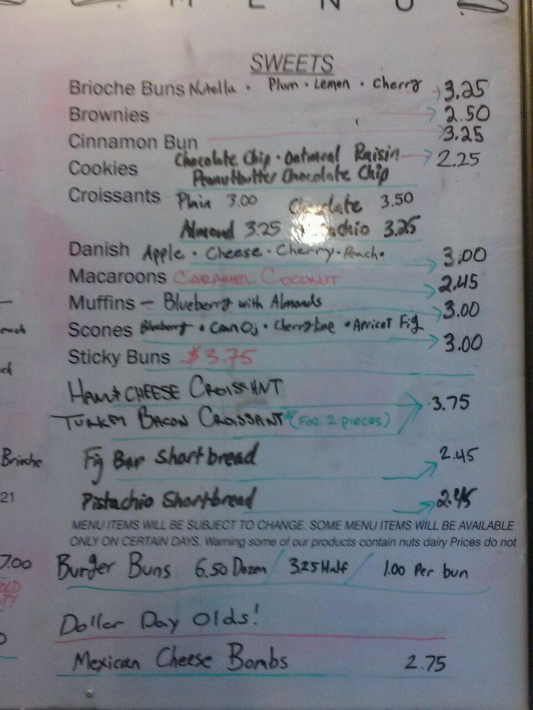

Creating a website for a local bakery seeking to establish their online presence.
Boule Bakery had never had their own website before speaking with me. Their only online presence was on scattered social media sites, each with conflicting and out-of-date information. The challenge was to centralize and unify their most recent information, presenting it clearly and nicely.
Target users were new and recurring customers. The staff wanted to attract new customers with the site and also keep regular customers updated with in-house menu items.
One-woman team on executing this project. I consulted bakery staff for a menu and for the basic information information they wanted to display on the website. Made sure to keep them up to date on the development process, starting with a bare-bones demo site. Once they approved it, I fleshed out the visuals and interactivity.
Roles:
The staff provided much of the basic content, and I filled the gaps in as needed.
The bakery had no previous online presence, so the content and visuals were created from scratch. This was both a constraint and a fun opportunity.
The bakery was understaffed, so I had no professional-quality photos of the business space itself nor its products since the staff didn't have the time to get these. I had to get resourceful and use stock photos until they could obtain the photos.
Once the staff and I agreed on the site, they sent over their menu, core information (address, business hours, etc.) and notes for what they wanted to include in the site. Bakery staff and I agreed on a 1-page website for easy reading on the go. To develop the site, I decided on Bootstrap for its mobile-friendliness.
One of the biggest challenges was organizing the menu from an improvised in-house whiteboard to a more polished online version. The bakery's in-house menu was written on a whiteboard, so I was challenged to clean it up and make it presentable for online.

The bakery's in-house menu. We had a lot of back-and-forth since some of their items and prices had changed!
Since the goal was to drive sales, I wanted to make people hungry as soon as they saw the site (Diabolical? Yes. Effective? Also yes.). I scoured stock image sites for high-quality images of bread and a few other items on the menu - croissants, cookies, etc. - as a placeholder for the gallery section. My priority was choosing stock photos that looked organic instead of too staged or sterile.
The staff didn't want to include their Facebook or Twitter pages, so I made sure to include a Yelp button at the very least to reinforce the bakery's reputation - their page had 20 glowing reviews and a nearly 5-star rating. I also included Google Maps to make it much easier for customers to find directions to the bakery.